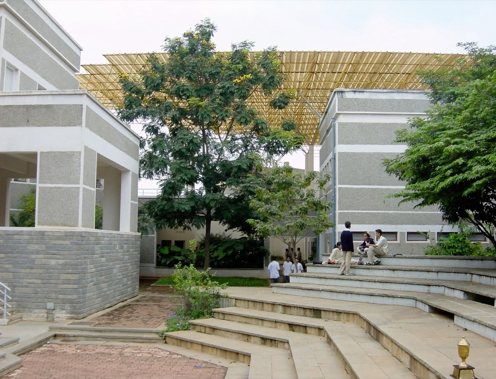
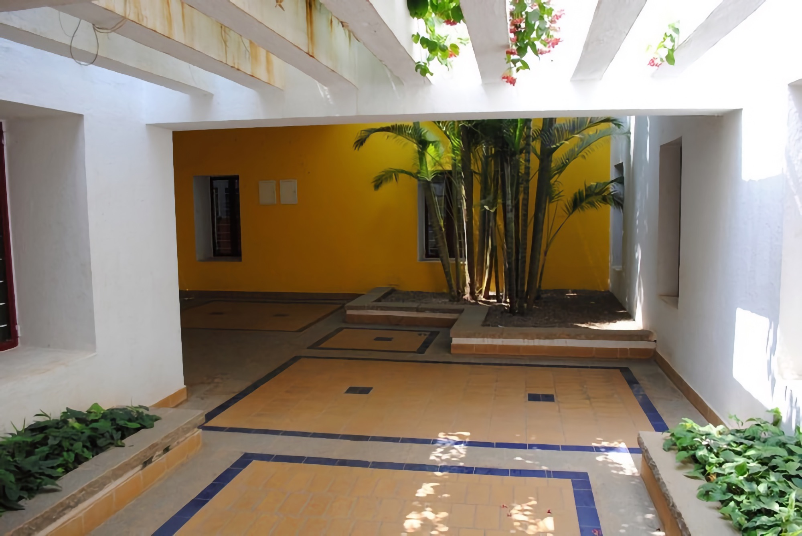
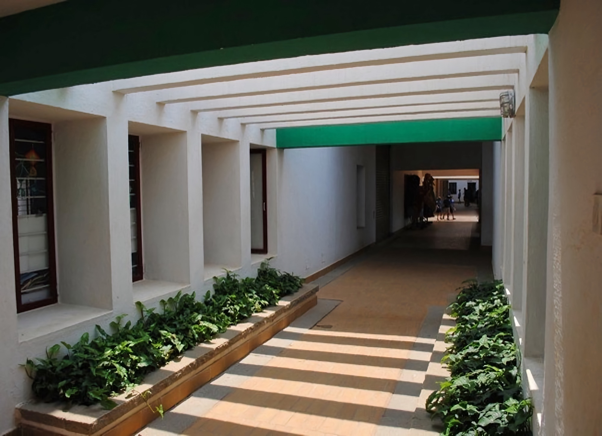
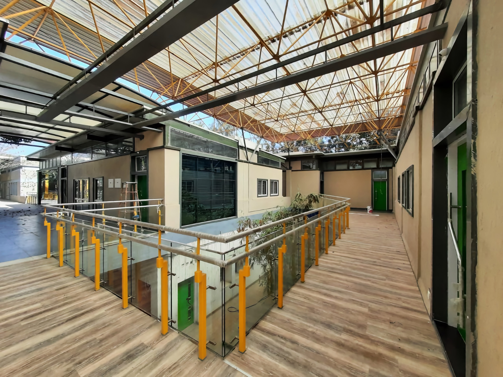
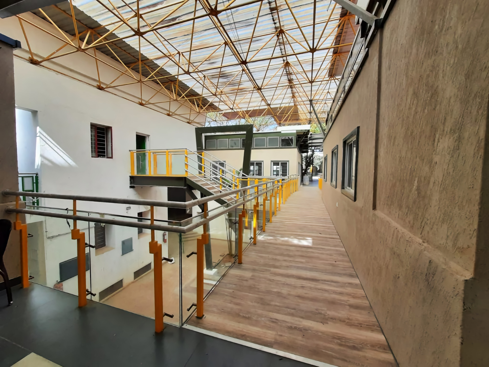
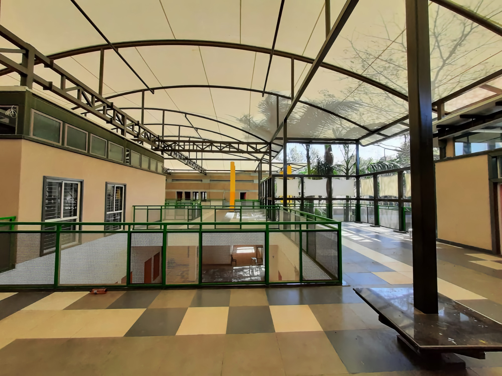
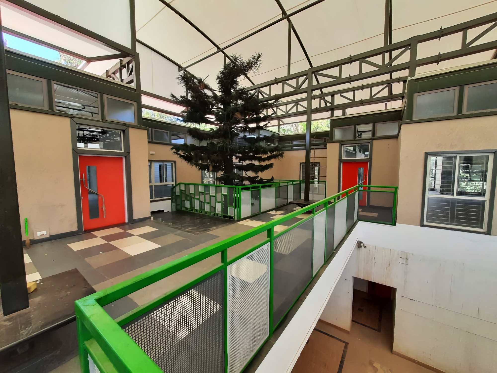
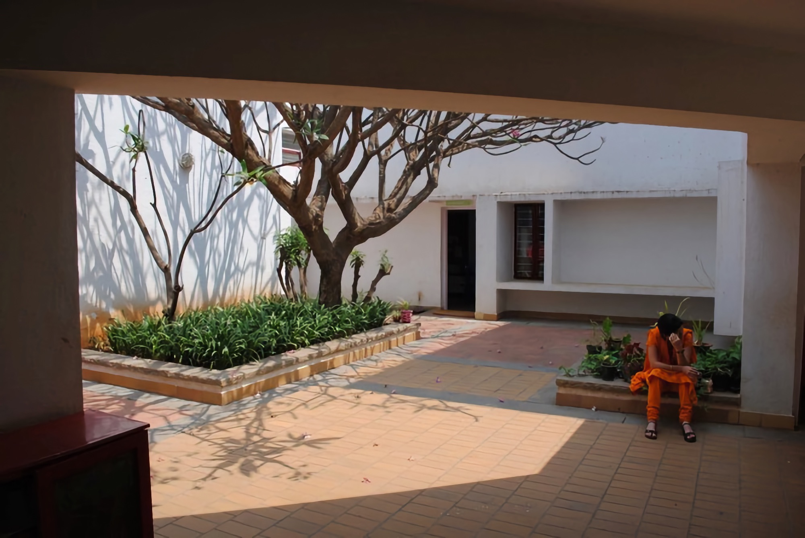

Mallya Aditi International School

Overview
Built on a five-acre site in Yelahanka, in north Bangalore, Mallya Aditi International School was our first school and our first venture into institutional architecture. We won the commission through a design competition in 1990, and the campus was conceived to hold 600 students across just over one lakh square feet of built space. It was among the first international schools in Bangalore, at a time when the city had few precedents for what such a school should look or feel like. That absence of a template turned out to be a gift: it let us ask, from first principles, what a child's day at school should be like.
The answer began with what we wanted to leave out. Most schools of the period were organised along corridors — long, doubly loaded passages with classrooms on either side, dark in the middle and noisy at every change of period. Corridors are efficient on paper, but they are dead space. Nobody lingers in them, nobody learns in them, and they cut classrooms off from light, air and the view outside. At Aditi we did away with the conventional corridor altogether. In its place, the school is arranged as a sequence of interconnected courtyards, so that moving from one class to the next means walking through open, shaded, planted space rather than down a tunnel.
The courtyards do several jobs at once. They are the school's circulation, its gathering places and its lungs. Every classroom borders one, so every classroom can draw light from more than one side and take advantage of cross-ventilation — important in Bangalore, where a well-shaded, well-ventilated room stays comfortable for most of the year without mechanical cooling. Shaded verandahs mediate between the courtyards and the rooms, giving children a place to wait, talk or spill out into, and giving the monsoon somewhere to fall that is not a doorway.
Just as important is what the courtyards do for the life of the school. A child moving through Aditi is constantly passing other children — older students, younger ones, friends from other sections. Teachers see students outside the classroom, and students see teachers outside their roles. These chance encounters are a quiet but powerful part of an education, and the plan was designed to multiply them. Each courtyard has its own scale and character, so the campus reads not as a single institution but as a cluster of smaller places, each one knowable to a child.
Aditi was drawn entirely by hand. Some of its original working drawings were on display when we marked fifty years of the practice, and they remain among the drawings we are proudest of. The project set down ideas that have run through our educational work ever since: courtyards over corridors, daylight in every room, and the belief that the spaces between classrooms matter as much as the classrooms themselves.
In 2021, three decades after the school first opened, we returned to add a first floor. The original building is load-bearing, so the extension had to be light: we built it as a steel structure, with lightweight Aerocon panels for the walls and a combination of sheet and fabric roofs. The challenge was to make a modern addition that still felt like Aditi. Clerestory windows and balconies recreate the quality of light and the ease of ventilation of the original classrooms below, carrying the spirit of the old school into a new structure.
Revisiting our first school after thirty years was a rare privilege. It confirmed that the core idea — a school built around open, connected courtyards rather than corridors — has aged well, and that a building designed around how children actually move, gather and learn can keep serving them for generations.
Architects — Kumar & Swamy Architects, Bangalore







